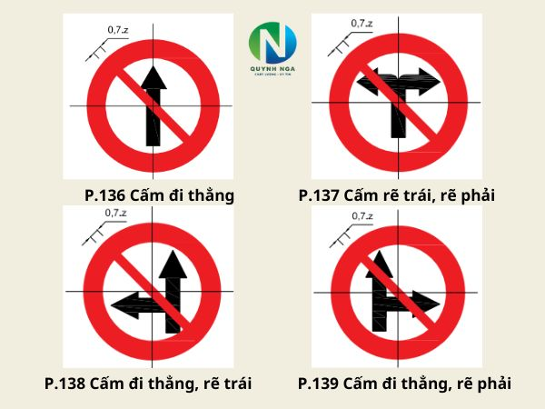

Traffic Sign Recognition System
An AI-powered solution to enhance road safety in Vietnam
Vietnam Road Safety Information
Tính Năng Nổi Bật
Nhận Diện Thời Gian Thực
Phát hiện biển báo ngay lập tức qua camera với độ chính xác cao
Phân Tích Hình Ảnh
Tải ảnh lên và nhận kết quả phân tích chi tiết trong vài giây
Lịch Sử Phát Hiện
Lưu trữ và xem lại các phát hiện trước đó một cách dễ dàng
Nội Dung Chính
Nghị định 168/2024/NĐ-CP quy định về xử phạt vi phạm hành chính trong lĩnh vực giao thông đường bộ và đường sắt, có hiệu lực từ ngày 01/01/2025.
Các quy định nổi bật:
- Xử phạt nồng độ cồn: Mức phạt cao nhất lên đến 40 triệu đồng và tước GPLX đến 24 tháng
- Quy định về tốc độ: Phạt từ 800.000 - 12 triệu đồng tùy mức độ vượt quá tốc độ
- Vượt đèn đỏ: Phạt từ 3 - 6 triệu đồng, tước GPLX 1-3 tháng
- Không đội mũ bảo hiểm: Phạt từ 400.000 - 600.000 đồng
- Sử dụng điện thoại khi lái xe: Phạt từ 800.000 - 1 triệu đồng
Biện pháp tăng cường an toàn:
- Lắp đặt hệ thống camera giám sát trên các tuyến đường
- Tăng cường tuần tra kiểm soát của cảnh sát giao thông
- Ứng dụng công nghệ hiện đại trong quản lý giao thông
- Nâng cao ý thức chấp hành luật giao thông
Luật này đã góp phần giảm 10% số vụ tai nạn giao thông và 15% số người tử vong sau 1 năm thực hiện.
Biển Báo Giao Thông Đặc Biệt
Khám phá các biển báo quan trọng trong hệ thống giao thông Việt Nam tieu bieu
Biển Báo Cấm
Biển báo thể hiện các điều cấm mà người tham gia giao thông không được vi phạm
Biển Báo Cấm
Biển báo hình tròn, viền đỏ, nền trắng, hình vẽ màu đen. Biển báo cấm thể hiện các điều cấm mà người tham gia giao thông không được vi phạm.
Biển Báo Nguy Hiểm
Biển báo cảnh báo các tình huống nguy hiểm có thể xảy ra trên đường
Biển Báo Nguy Hiểm

Biển báo hình tam giác đều, viền đỏ, nền vàng, hình vẽ màu đen. Biển báo nguy hiểm để cảnh báo các tình huống nguy hiểm có thể xảy ra.
Biển Báo Chỉ Dẫn
Biển báo hướng dẫn những thông tin cần thiết cho người tham gia giao thông
Biển Báo Chỉ Dẫn

Biển báo hình chữ nhật hoặc hình vuông, nền xanh, hình vẽ màu trắng. Biển báo chỉ dẫn để hướng dẫn những thông tin cần thiết cho người tham gia giao thông.